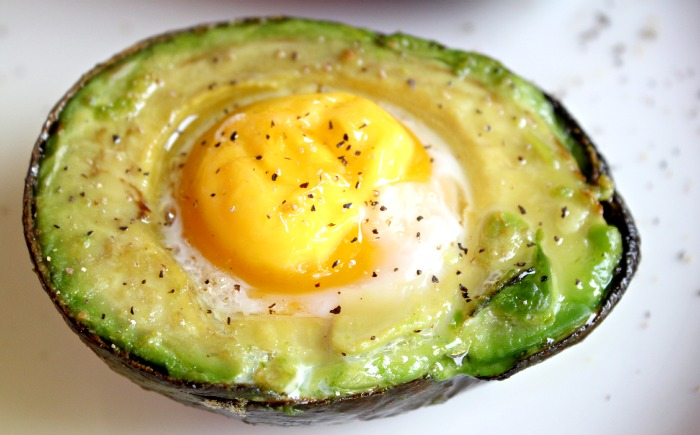

Go back
Avocado baked eggs

This avocado egg recipe has a nice contrast between the soft and fresh avocado and the creaminess of a poached egg — it is brilliant. Good thing is, it's also healthy and satisfying.
Ingredients
- 2 small eggs
- 1 avocado, halved and pitted
- 2 teaspoons chopped fresh chives, or to taste
- 1 pinch dried parsley, or to taste
- 1 pinch sea salt and ground black pepper to taste
- 2 slices cooked bacon, crumbled
Steps
- Preheat the oven to 425 degrees F (220 degrees C).
- Crack eggs into a bowl, being careful to keep the yolks intact.
- Arrange avocado halves in a baking dish, resting them along the edge so avocado won't tip over. Gently spoon 1 egg yolk into the avocado hole. Continue spooning egg white into the hole until full. Repeat with remaining egg yolk, egg white, and avocado.
- Season each filled avocado with chives, parsley, sea salt, and pepper.
- Gently place baking dish in the preheated oven and bake until eggs are cooked, about 15 minutes. Sprinkle bacon over avocado.